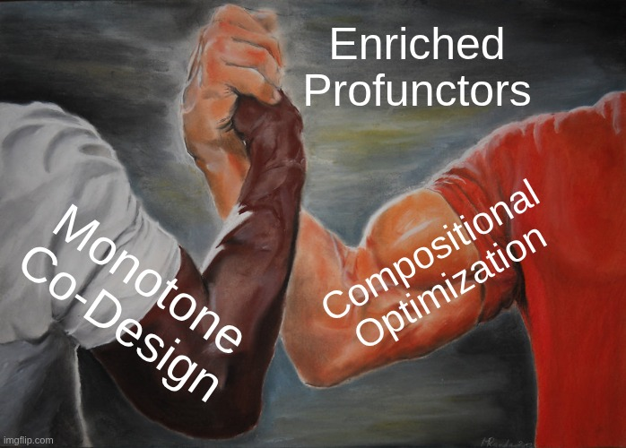
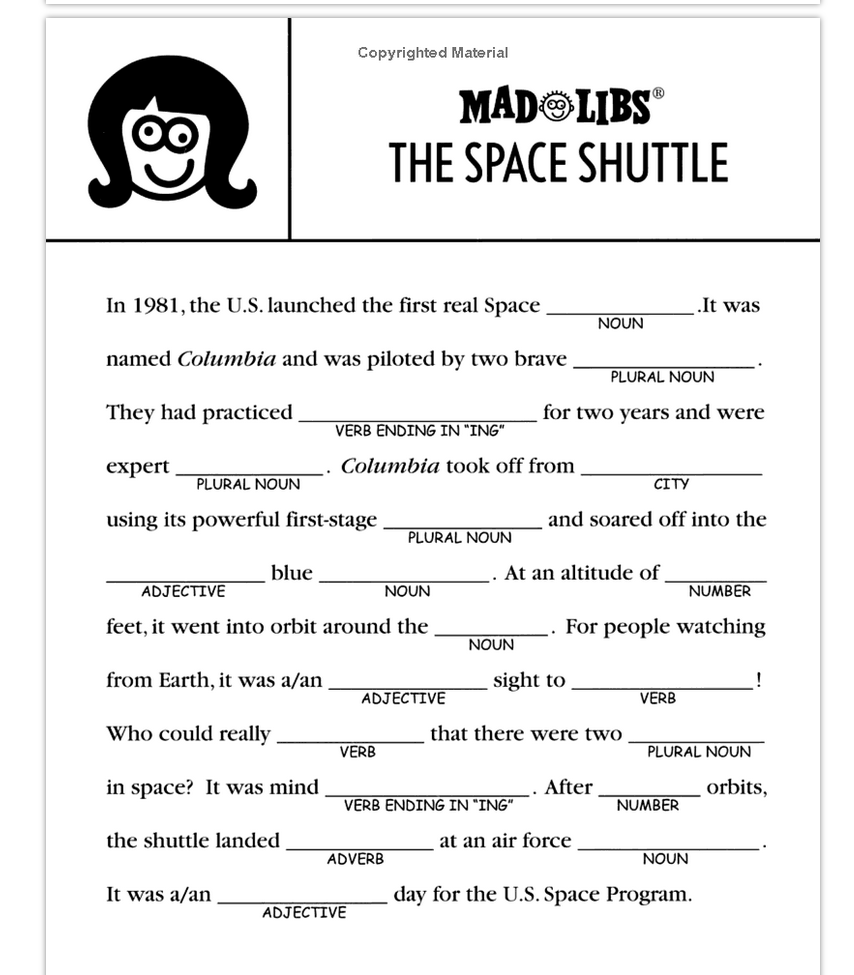
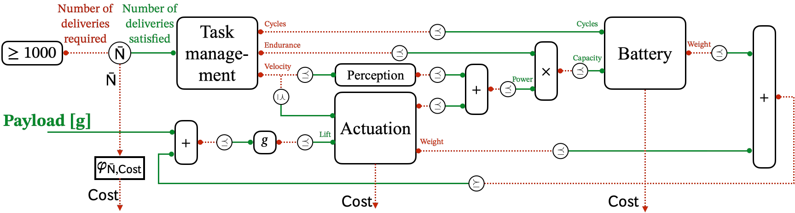
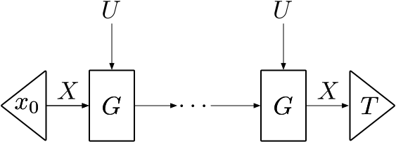
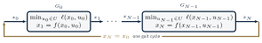
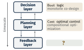
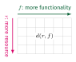
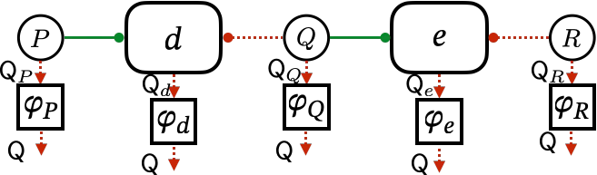
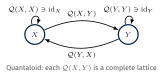

AFOSR COE CODAC
Compositional Optimization for DIGICAMS
Matthew Hale (PI) · Hans Riess (Key Person)
Georgia Institute of Technology
CODAC Kickoff Meeting · Arlington, VA · September 2026

DIGICAMS composes decisions across five thrusts
Center goal: category theory to compose decision-making methods across optimization, dynamics, & control.
Thrust 1
Computational Sheaf Theory
GT co-lead
Thrust 2
Learning & Control for Open Systems
Thrust 3
Compositional Optimization Algorithms
GT lead
Thrust 4
Context-Aware Decisions under Uncertainty
Thrust 5
Scalable Implementation & Deployment
Georgia Tech leads Thrust 3
- asynchronous iterative algorithms on/with sheaves
- mixed-integer programs via structured decompositions
- families of nonconvex functions that compose
… and contributes to other thrusts
- co-leads Thrust 1 (Riess)
- co-leads Thrusts 2 and 4 (Hale)
… and collaborates with SCHEMA
- this talk: co-design \(\leftrightarrow\) compositional optimization
DIGICAMS technical proposal, §2 (thrusts and leads); Georgia Tech statement of work, rev. May 2026 (tasks 3.1, 3.3, 3.4)
2
PART ONE
Co-Design & Compositional Optimization
Enriched profunctors unify two ways of composing decisions
WITH

Hans Riess
Matthew Hale
3
Takeaway

Enriched profunctors unify monotone co-design & compositional optimization.
[1] H. Riess, Y. Huang, M. Klawonn, G. Zardini, and M. Hale. IEEE Conference on Decision and Control, 2026, to appear
4
What is category theory?

Category theory is Mad Libs:
a template whose blanks an instance fills in.
a template whose blanks an instance fills in.
Analogy due to Tai-Danae Bradley
5
Co-design & compositional optimization are decompositional
Monotone co-design
Censi; Zardini; et al.
Design a system with the minimal resources required to achieve a desired effect.
- design time
- discrete design choices
- decompose a system into components
Example: designing an unmanned aerial system (UAS)

Compositional optimization
Rockafellar; Hanks, Fairbanks, Hale, Klawonn, Riess; et al.
Solve a large optimization problem by solving small problems on its pieces.
- run time
- continuous decision variables
- decompose a program into levels & stages
Example: model predictive control (MPC)

[2] A. Censi. arXiv:1512.08055, 2016 · [3, 4, 5]
6
Both fields draw their problems as wiring diagrams
A system: monotone co-design
| box | a component, i.e. a design problem \(d\) |
| wire | a resource or functionality: ordered |
| value | \(d(r,f)\in\mathsf{Bool}\): can \(r\) provide \(f\)? |
| internal wire | some feasible \(m\): \({\color{#048A81}\bigvee_m}\) |

A program: compositional optimization
| box | a subproblem: one stage \(G_k\) per timestep |
| wire | a decision variable or state: \(\mathbb{R}^n\) |
| value | \(G_k(x_k,x_{k+1})\in[0,\infty]\): cost |
| internal wire | optimal \(x_k\): \({\color{#048A81}\inf_{x_k}}\) |
The wiring diagram is the specification language.
[1] H. Riess, Y. Huang, M. Klawonn, G. Zardini, and M. Hale. IEEE Conference on Decision and Control, 2026, to appear · [5] · UAS, top; MPC, bottom
7
Series composition has the same shape in both fields
Monotone co-design
feasibility relations from resources to functionalities
\[ (d_1;d_2)(r,f) \;=\; {\color{#048A81}\textstyle\bigvee_{m\in\mathsf{M}}}\; d_1(r,m)\;{\color{#660064}\wedge}\; d_2(m,f) \]
“some intermediate \(m\) is feasible from \(r\) and provides \(f\)”
Compositional optimization
bifunctions from perturbations to decisions
\[ (F;G)(x,z) \;=\; {\color{#048A81}\textstyle\inf_{y\in Y}}\; F(x,y)\;{\color{#660064}+}\; G(y,z) \]
“the best intermediate \(y\): stage cost plus stage cost”
\[ {\color{#048A81}\bigvee} \;\longmapsto\; {\color{#048A81}\inf} \]
“or”: choose the best alternative
\[ {\color{#660064}\wedge} \;\longmapsto\; {\color{#660064}+} \]
“and”: require both at once
Mad Libs: \(\mathsf{Bool}=({\color{#048A81}\vee},{\color{#660064}\wedge})\) or \(\mathsf{Cost}=({\color{#048A81}\inf},{\color{#660064}+})\).
8
Quantales: truth values to choose among and combine
Big idea. To compose problems we need only two operations on their values.
Reading a quantale
- \(p\sqsubseteq q\): \(q\) is at least as good as \(p\)
- \({\color{#048A81}\bigsqcup_i}\, q_i\): the best alternative “or”
- \(p\,{\color{#660064}\odot}\, q\): achieving both “and”
- \(e\): free, requires nothing
- \(\bot={\color{#048A81}\bigsqcup}\emptyset\): unachievable
- \([p,q]\): how far \(p\) implies \(q\)
Definition (quantale)
A quantale \(\mathsf{Q}=(Q,\sqsubseteq,{\color{#660064}\odot},e)\) is a complete lattice (every subset has a join \({\color{#048A81}\bigsqcup}\)) with a commutative monoid \((Q,{\color{#660064}\odot},e)\) whose product distributes over all joins:
\[ p\,{\color{#660064}\odot}\,{\color{#048A81}\textstyle\bigsqcup_{i}}\,q_i \;=\; {\color{#048A81}\textstyle\bigsqcup_{i}}\,(p\,{\color{#660064}\odot}\, q_i). \]
Its internal hom \([p,q]={\color{#048A81}\bigsqcup}\{\,r : p\,{\color{#660064}\odot}\, r\sqsubseteq q\,\}\) is the largest \(r\) with \(p\,{\color{#660064}\odot}\, r\sqsubseteq q\): \(r\sqsubseteq [p,q]\iff p\,{\color{#660064}\odot}\, r\sqsubseteq q\).[6] C. J. Mulvey. Rendiconti del Circolo Matematico di Palermo, Supplemento, 12:99–104, 1986 · [7, 8] · Why not [−∞, ∞]? An objective bounded below can be shifted into [0, ∞].
9
Example: Bool versus Cost quantales
| \(\mathsf{Bool}\): feasibility | \(\mathsf{Cost}\): cost | |
|---|---|---|
| values \(Q\) | \(\{\bot,\top\}\) | \([0,\infty]\) |
| order \(p\sqsubseteq q\) | \(p\Rightarrow q\) | \(p\geq q\) (cheaper is better) |
| join \({\color{#048A81}\bigsqcup}\) or | \({\color{#048A81}\vee}\) | \({\color{#048A81}\inf}\) |
| product \({\color{#660064}\odot}\) and | \({\color{#660064}\wedge}\) | \({\color{#660064}+}\) (costs add) |
| unit \(e\) free | \(\top\) | \(0\) |
| bottom \(\bot\) impossible | \(\bot\) | \(\infty\) |
| distributivity | \(p{\color{#660064}\wedge}{\color{#048A81}\bigvee_i} q_i={\color{#048A81}\bigvee_i}(p{\color{#660064}\wedge} q_i)\) | \(p{\color{#660064}+}{\color{#048A81}\inf_i} q_i={\color{#048A81}\inf_i}(p{\color{#660064}+}q_i)\) |
| internal hom \([p,q]\) | \(p\Rightarrow q\) implication | \((q-p)_+\) how much more \(q\) costs than \(p\) |
A layered control architecture

[9] N. Matni, A. D. Ames, and J. C. Doyle. IEEE Control Systems Magazine, 2024 · layered control architectures
10
Quantales are everywhere engineers evaluate designs
| values \(Q\) | order \(\sqsubseteq\) | join \({\color{#048A81}\bigsqcup}\) | product \({\color{#660064}\odot}\) | unit \(e\) | measures | |
|---|---|---|---|---|---|---|
| \(\mathsf{Bool}\) | \(\{\bot,\top\}\) | \(\bot\sqsubseteq\top\) | \({\color{#048A81}\vee}\) | \({\color{#660064}\wedge}\) | \(\top\) | feasibility |
| \(\mathsf{Cost}\) | \([0,\infty]\) | \(\geq\) | \({\color{#048A81}\inf}\) | \({\color{#660064}+}\) | \(0\) | money, energy, time |
| \(\overline{\mathbb{N}}\) | \(\mathbb{N}\cup\{\infty\}\) | \(\geq\) | \({\color{#048A81}\inf}\) | \({\color{#660064}+}\) | \(0\) | missed deliveries |
| \(\mathsf{Cap}\) | \([0,\infty]\) | \(\leq\) | \({\color{#048A81}\sup}\) | \({\color{#660064}\min}\) | \(\infty\) | bandwidth, throughput |
| \(\mathsf{Fuzz}_{\text{G}}\) | \([0,1]\) | \(\leq\) | \({\color{#048A81}\sup}\) | \({\color{#660064}p\,q}\) | \(1\) | reliability |
| \(\mathsf{Fuzz}_{\text{Ł}}\) | \([0,1]\) | \(\leq\) | \({\color{#048A81}\sup}\) | \({\color{#660064}\max\{0,p+q-1\}}\) | \(1\) | confidence |
| \(\mathsf{Fuzz}_{\text{Gödel}}\) | \([0,1]\) | \(\leq\) | \({\color{#048A81}\sup}\) | \({\color{#660064}\min}\) | \(1\) | confidence |
| \(\mathcal{P}(I)\) | \(\text{subsets of }I\) | \(\subseteq\) | \({\color{#048A81}\cup}\) | \({\color{#660064}\cap}\) | \(I\) | working implementations |
| \(\mathsf{Open}(X)\) | \(\text{open sets of }X\) | \(\subseteq\) | \({\color{#048A81}\cup}\) | \({\color{#660064}\cap}\) | \(X\) | where a property holds |
| \(\mathsf{Con}(\Sigma)\) | \(\text{contracts }(A,G)\) | \(\text{refinement}\) | \({\color{#048A81}(\cap,\cup)}\) | \({\color{#660064}\parallel}\) | \((\Sigma,\Sigma)\) | assume/guarantee specs |
| \(\mathsf{Q}^{I},\ \mathsf{Q}_1\times\mathsf{Q}_2\) | \(\text{tuples}\) | \(\text{pointwise}\) | \(\text{pointwise}\) | \(\text{pointwise}\) | \((e,\dots,e)\) | many criteria at once |
| \(\mathsf{Mat}_n(\mathsf{Q})\) | \(n\times n\text{ over }\mathsf{Q}\) | \(\text{entrywise}\) | \(\text{entrywise}\) | \({\color{#660064}AB}\) | \(\operatorname{id}\) | multi-hop routes |
| \(\mathcal{P}(A^{*})\) | \(\text{word sets}\) | \(\subseteq\) | \({\color{#048A81}\cup}\) | \({\color{#660064}UV}\) | \(\{\varepsilon\}\) | behaviors (traces) |
[10] F. W. Lawvere. Rendiconti del Seminario Matematico e Fisico di Milano, 43:135–166, 1973 · [7, 8, 1]
11
Orders and distances are quantale-enriched categories
Definition (Q-category)
A set of objects with a hom-value \(\llbracket x,y\rrbracket_{\mathsf{C}}\in Q\) for each pair, such that
\[ e\sqsubseteq \llbracket x,x\rrbracket_{\mathsf{C}},\qquad\qquad \llbracket x,y\rrbracket_{\mathsf{C}}\,{\color{#660064}\odot}\,\llbracket y,z\rrbracket_{\mathsf{C}}\sqsubseteq\llbracket x,z\rrbracket_{\mathsf{C}}. \]
\(\llbracket x,y\rrbracket_{\mathsf{C}}\): how well \(x\) can be traded for \(y\). Staying put is free; trading through \(y\) is never better than trading directly.Co-design: \(\mathsf{Bool}\)-category = preorder
\[ \llbracket x,y\rrbracket_{\mathsf{C}}=\top\iff x\preceq y \]
“\(y\) is at least as good as \(x\)”: ordered resources and functionalities
Optimization: \(\mathsf{Cost}\)-category = Lawvere metric space
\[ 0\geq d(x,x),\qquad d(x,y)\,{\color{#660064}+}\,d(y,z)\geq d(x,z) \]
\(d(x,y)=\llbracket x,y\rrbracket_{\mathsf{C}}\): the price of moving from \(x\) to \(y\)
Discrete Q-category: \(\llbracket x,y\rrbracket_{\mathsf{C}}=e\) if \(x=y\), else \(\bot\) (over \(\mathsf{Cost}\): \(0\) or \(\infty\)). A bare set such as \(\mathbb{R}^n\): the decision space of a program.
[10] F. W. Lawvere. Rendiconti del Seminario Matematico e Fisico di Milano, 43:135–166, 1973 · [11, 12]
12
Design problems and bifunctions are both Q-profunctors
Definition (Q-profunctor)
For Q-categories \(\mathsf{A}\) and \(\mathsf{B}\), a Q-profunctor \(\mathsf{A}\xrightarrow{\;\Phi\;}\mathllap{\raisebox{0.08em}{$\scriptscriptstyle|$}\mkern17mu}\mathsf{B}\) (also called a distributor or bimodule) is a function \(\Phi:\operatorname{obj}(\mathsf{A})\times\operatorname{obj}(\mathsf{B})\to Q\) such that, for all \(a,a^\ast\in\mathsf{A}\) and \(b,b^\ast\in\mathsf{B}\),
\[ \llbracket b^\ast,b\rrbracket_{\mathsf{B}}\;{\color{#660064}\odot}\; \Phi(a,b)\;{\color{#660064}\odot}\;\llbracket a,a^\ast\rrbracket_{\mathsf{A}} \;\sqsubseteq\; \Phi(a^\ast,b^\ast). \tag{bimodule law} \]
\(\Phi(a,b)\) grades how well \(a\) delivers \(b\). Asking for less (\(b\) to \(b^\ast\)) and offering more (\(a\) to \(a^\ast\)) can only help.Co-design, \(\mathsf{Q}=\mathsf{Bool}\): a design problem \(\mathsf{R}\xrightarrow{\;d\;}\mathllap{\raisebox{0.08em}{$\scriptscriptstyle|$}\mkern15mu}\mathsf{F}\)
\(d(r,f)=\top\) iff resources \(r\) suffice to provide functionality \(f\), e.g. a sensor from power budgets to data quality.
Compositional optimization, \(\mathsf{Q}=\mathsf{Cost}\): a bifunction \(\mathbb{R}^m\xrightarrow{\;F\;}\mathllap{\raisebox{0.08em}{$\scriptscriptstyle|$}\mkern15mu}\mathbb{R}^n\) (discrete)
\(F(u,x)\in[0,\infty]\) is the cost of decision \(x\) under perturbation \(u\), e.g.
\[ F(u,x)=g_0(x)+\delta_{\{g(x)\leq u\}}(x):\quad \text{minimize } g_0 \text{ subject to } g\leq u. \]

a table of values in \(Q\)
[10] F. W. Lawvere. Rendiconti del Seminario Matematico e Fisico di Milano, 43:135–166, 1973 · [12, 13, 4] · Rockafellar §29, §38
13
The bimodule law: three examples
Monotonicity
\(\mathsf{Bool}\), preorders
\[ d(r,f)\Rightarrow d(r^\ast,f^\ast) \]
for \(r\preceq r^\ast\), \(f^\ast\preceq f\)
more resource, less function: still feasible
Triangle inequality
\(\mathsf{Cost}\), Lawvere metric spaces
\[ \begin{aligned}&d(r^\ast,f^\ast)\leq{}\\ &\llbracket f^\ast,f\rrbracket_{\mathsf{F}}{\color{#660064}+}d(r,f){\color{#660064}+}\llbracket r,r^\ast\rrbracket_{\mathsf{R}}\end{aligned} \]
cost of switching options
No condition
\(\mathsf{Cost}\), discrete \(\mathbb{R}^m\), \(\mathbb{R}^n\)
every
\[ F:\mathbb{R}^m\times\mathbb{R}^n\to[0,\infty] \]
every bifunction is a profunctor
[2] A. Censi. arXiv:1512.08055, 2016 · [3, 1, 4] · CDC 2026 §II-D, II-E; Rockafellar §29, §38
14
Series, parallel, and feedback work over any quantale
| any quantale \(\mathsf{Q}\) | co-design (\(\mathsf{Bool}\)) | compositional optimization (\(\mathsf{Cost}\)) | |
|---|---|---|---|
| series | \((d_1;d_2)(r,f)={\color{#048A81}\textstyle\bigsqcup_{m}}\, d_1(r,m)\,{\color{#660064}\odot}\, d_2(m,f)\) | chain two components | multistage programs |
| identity | \(\operatorname{id}_{\mathsf{C}}(c,c')=\llbracket c',c\rrbracket_{\mathsf{C}}\), a unit for series | a bare wire: \([\,c'\preceq c\,]\) | an equality constraint \(c=c'\): \(\delta_{\Delta}\) |
| parallel | \((d\otimes d')\big((r,r'),(f,f')\big)=d(r,f)\,{\color{#660064}\odot}\, d'(r',f')\) | independent subsystems | separable program |
| feedback | \(\operatorname{Tr}_{\mathsf{M}}(d)(r,f)={\color{#048A81}\textstyle\bigsqcup_{m,m'}}\, d\big((r,m),(f,m')\big)\,{\color{#660064}\odot}\,\llbracket m,m'\rrbracket_{\mathsf{M}}\) | a functionality fed back as a resource: a battery must carry its own weight | a constraint that closes a loop: a periodic gait, \(x_N=x_0\) |
[1] H. Riess, Y. Huang, M. Klawonn, G. Zardini, and M. Hale. IEEE Conference on Decision and Control, 2026, to appear · [14, 2, 5]
15
Side by side, only the quantale changes
| monotone co-design | compositional optimization | Q-profunctors | |
|---|---|---|---|
| coefficients | \(\mathsf{Bool}\) | \(\mathsf{Cost}\) | \(\mathsf{Q}=(Q,\sqsubseteq,{\color{#660064}\odot},e)\) |
| objects | preorders | Euclidean spaces (discrete) | Q-categories |
| component | \(d(r,f)\in\mathsf{Bool}\) | \(F(x,y)\in[0,\infty]\) | \(d(r,f)\in Q\) |
| series | \({\color{#048A81}\bigvee_m}\, d_1{\color{#660064}\wedge}d_2\) | \({\color{#048A81}\inf_y}\, F{\color{#660064}+}G\) | \({\color{#048A81}\bigsqcup_m}\, d_1{\color{#660064}\odot}d_2\) |
| parallel | \(d_1{\color{#660064}\wedge}d_2\) | \(F_1{\color{#660064}+}F_2\) | \(d_1{\color{#660064}\odot}d_2\) |
| identity | \([\,f\preceq r\,]\) | \(\delta_{\Delta}\) | \(\llbracket f,r\rrbracket_{\mathsf{C}}\) |
| feedback | \({\color{#048A81}\bigvee_m}\, d\big((r,m),(f,m)\big)\) | \({\color{#048A81}\inf_m}\, F\big((x,m),(y,m)\big)\) | \({\color{#048A81}\bigsqcup_{m,m'}}\, d\,{\color{#660064}\odot}\,\llbracket m,m'\rrbracket_{\mathsf{M}}\) |
Main takeaway. Both co-design & compositional optimization are Q-profunctors between Q-categories.
[1] H. Riess, Y. Huang, M. Klawonn, G. Zardini, and M. Hale. IEEE Conference on Decision and Control, 2026, to appear · [4, 5]
16
PART TWO
Vignettes: Higher Category Theory
Change of base, quantaloids, and proarrow equipments
17
Three vignettes: where enrichment leads next
Vignette 1
Heterogeneous bases
Components in different quantales: how do they compose?
Vignette 2
Enriching in a quantaloid
What if a hom-value is itself a design problem?
Vignette 3
Proarrow equipments
Where do ordinary maps and catalogs of parts fit?
Categories can only do so much. The story continues with higher categories.
18
Vignette 1: Change of base
Change of base composes components graded in different quantales.
Why? Battery in \(\mathsf{Cost}\), task logic in \(\mathsf{Bool}\), missed deliveries in \(\overline{\mathbb{N}}\): how do they compose?
Push each \(\mathsf{Q}_i\) forward along a lax map \(\varphi_i:\mathsf{Q}_i\to\mathsf{Q}\),
\[ \varphi(p)\,{\color{#660064}\odot}\,\varphi(q)\sqsubseteq\varphi(p\,{\color{#660064}\odot}\,q),\qquad e\sqsubseteq\varphi(e), \]
then compose in \(\mathsf{Q}\):
\[ (d;e)(r,f)={\color{#048A81}\bigsqcup_{m}}\,\varphi_d\big(d(r,m)\big)\,{\color{#660064}\odot}\,\varphi_e\big(e(m,f)\big). \]

Example: \(\mathsf{Bool}\to\mathsf{Cost}\), \(\top\mapsto 0\), \(\bot\mapsto\infty\) is the indicator function of convex analysis.
[15] F. Borceux. Handbook of Categorical Algebra 2: Categories and Structures, Cambridge University Press, 1994 · [1] · Borceux §6.4; CDC 2026 Lemma 2, Thm. 2, §IV-B
19
Vignette 2: Enriching in a quantaloid
Enriching in the quantaloid of design problems gives meta co-design.
Why? Yes or no is too coarse: whether an agent can fly a mission depends on how it is configured.
| co-design: | \(d(a,b)=\top\) or \(\bot\) | can agent \(a\) fly mission \(b\)? |
| meta co-design: | \(\Phi(a,b)=\) | which configuration of \(a\) flies \(b\)? |
\(\operatorname{Dist}(\mathsf{Q})\) is a quantaloid (a quantale with many objects), so we can:
- compare: \(\Phi\sqsubseteq\Psi\) iff \(\Phi(a,b)\sqsubseteq\Psi(a,b)\) for all \(a,b\)
- divide: \(\Phi;\Theta\sqsubseteq\Psi\iff\Theta\sqsubseteq\Phi\mathbin{\triangleright}\Psi\)
the most permissive missing component \(\Theta\) that satisfies system specification \(\Psi\) - enrich: over \(\operatorname{Dist}(\mathsf{Bool})\)
a hom-value \(\llbracket a,a'\rrbracket_{\mathsf{A}}\) is itself a design problem

Meta co-design: designs implemented by designs implemented by designs … implemented by designs.
[16] I. Stubbe. Theory and Applications of Categories, 14(1):1–45, 2005 · [12, 17]
20
Vignette 3: Proarrow equipments
Proarrow equipments turn maps and catalogs into design problems.
Why? MPC’s dynamics are constraints; a catalog maps parts to what they need and give.
\[ \iff\ \Phi(a,b)\sqsubseteq\Psi(Fa,Gb) \]
Every map \(F\) gives a companion and a conjoint:
\[ \hat{F}(a,b)=\llbracket b,Fa\rrbracket_{\mathsf{B}},\quad \check{F}(b,a)=\llbracket Fa,b\rrbracket_{\mathsf{B}}. \]
A map is a constraint:
\[ \hat{f}(x,y)=\delta_{\{y=f(x)\}}. \]
A catalog is a design problem: \(\Sigma=\check{\operatorname{req}}\,;\hat{\operatorname{prov}}\),
\[ \Sigma(r,f)={\color{#048A81}\bigvee_{i}}\,[\,\operatorname{req}(i)\preceq r\,]\ {\color{#660064}\wedge}\ [\,f\preceq\operatorname{prov}(i)\,]. \]
Proarrow equipment: every map has a companion and a conjoint.
[18] R. J. Wood. Cahiers de Topologie et Géométrie Différentielle Catégoriques, 23(3):279–290, 1982 · [19, 12, 2, 3] · Stubbe 2014, Prop. 3.8
21
Conclusion: co-design and optimization are one concept
Summary
- Monotone co-design (\(\mathsf{Bool}\)) and compositional optimization (\(\mathsf{Cost}\)) are both Q-profunctors between Q-categories.
- Series, parallel, and feedback work over any commutative quantale: one string-diagram language.
Future work, from the vignettes
- Change of base: optimal co-design with implementations.
- Quantaloids: requirements flow-down; meta co-design over \(\operatorname{Dist}(\mathsf{Bool})\); sheaves.
- Equipments: maps as constraints, catalogs as design problems.
- Nonconvexity: compositional tame optimization.
More to the story…
Keep the variables and the objective; composing glues shared variables and adds objectives,
\[ (f \boxplus g)(x,y,z):=f(x,y){\color{#660064}+}g(y,z), \]
and minimizes nothing. Minimizing out \(y\) (black-boxing) recovers the \(\mathsf{Cost}\)-profunctor \({\color{#048A81}\inf_y} f{\color{#660064}+}g\). Cospans keep the implementation; profunctors keep the value.
One concept to rule them all. Q-profunctors between Q-categories, organized by quantaloids and proarrow equipments.
[1] H. Riess, Y. Huang, M. Klawonn, G. Zardini, and M. Hale. IEEE Conference on Decision and Control, 2026, to appear · [20, 21, 22] · decorated cospans
22
Papers, exchanges, workshops, and AFRL ties
Papers
CDC 26
Quantale-enriched co-design [1]
Riess, Huang, Klawonn, Zardini, Hale · GT, MIT, AFRL
Riess, Huang, Klawonn, Zardini, Hale · GT, MIT, AFRL
ACC 26
Asynchronous nonlinear sheaf diffusion for multi-agent coordination [23]
Zhao, Hanks, Riess, Cohen, Hale, Fairbanks · GT, UF
Zhao, Hanks, Riess, Cohen, Hale, Fairbanks · GT, UF
CDC 25
Distributed multi-agent coordination over cellular sheaves [24]
Hanks, Riess, Cohen, Gross, Hale, Fairbanks · GT, UF
Hanks, Riess, Cohen, Gross, Hale, Fairbanks · GT, UF
MSCS
A compositional framework for first-order optimization [21]
Hanks, Klawonn, Patterson, Hale, Fairbanks · UF, AFRL, Topos, GT
Hanks, Klawonn, Patterson, Hale, Fairbanks · UF, AFRL, Topos, GT
Active collaborations
- UF (Fairbanks)
- Florida Tech (Hanks)
- AFRL (Klawonn, Gamarra)
- MIT (Zardini, Huang)
- Caltech (Moeller, Ames)
Exchanges
Students
Student exchanges (UF \(\to\) GT):
William Kunzendorf & Joana Bou Barcelo
William Kunzendorf & Joana Bou Barcelo
Faculty
AFRL VFRP (Marco Gamarra, AFRL/RFA):
Hans Riess
Hans Riess
Workshops & sessions
- ACC 2026 Workshop: Applied Category Theory for Compositional Decision Making
- INFORMS Optimization Society Conference: Compositional Optimization on Networks
23
Thank you!
Matthew Hale
PI · Georgia Tech ECE
mhale30@gatech.edu
Hans Riess
Key Person · Georgia Tech ECE
riess@gatech.edu
Supported by the Air Force Office of Scientific Research (AFOSR), award FA9550-26-1-B039
24
References
- [1]H. Riess, Y. Huang, M. Klawonn, G. Zardini, and M. Hale. Quantale-enriched co-design: toward a framework for quantitative heterogeneous system design. IEEE Conference on Decision and Control, 2026, to appear. arXiv:2603.29921.
- [2]A. Censi. A mathematical theory of co-design. arXiv:1512.08055, 2016.
- [3]G. Zardini. Co-design of complex systems: from autonomy to future mobility. PhD thesis, ETH Zürich, 2023.
- [4]R. T. Rockafellar. Convex Analysis. Princeton University Press, 1970.
- [5]T. Hanks, B. She, M. Hale, E. Patterson, M. Klawonn, and J. Fairbanks. Modeling model predictive control: a category-theoretic framework for multistage control problems. American Control Conference, pp. 4850–4857, 2024.
- [6]C. J. Mulvey. &. Rendiconti del Circolo Matematico di Palermo, Supplemento, 12:99–104, 1986.
- [7]K. I. Rosenthal. Quantales and their Applications. Pitman Research Notes in Mathematics 234, Longman, 1990.
- [8]S. Abramsky and S. Vickers. Quantales, observational logic and process semantics. Mathematical Structures in Computer Science, 3(2):161–227, 1993.
- [9]N. Matni, A. D. Ames, and J. C. Doyle. Towards a theory of control architecture: a quantitative framework for layered multi-rate control. IEEE Control Systems Magazine, 2024. arXiv:2401.15185.
- [10]F. W. Lawvere. Metric spaces, generalized logic, and closed categories. Rendiconti del Seminario Matematico e Fisico di Milano, 43:135–166, 1973.
- [11]G. M. Kelly. Basic Concepts of Enriched Category Theory. London Mathematical Society Lecture Note Series 64, Cambridge University Press, 1982.
- [12]I. Stubbe. An introduction to quantaloid-enriched categories. Fuzzy Sets and Systems, 256:95–116, 2014.
- [13]B. Fong and D. I. Spivak. An Invitation to Applied Category Theory: Seven Sketches in Compositionality. Cambridge University Press, 2019.
- [14]A. Joyal, R. Street, and D. Verity. Traced monoidal categories. Mathematical Proceedings of the Cambridge Philosophical Society, 119(3):447–468, 1996.
- [15]F. Borceux. Handbook of Categorical Algebra 2: Categories and Structures. Cambridge University Press, 1994.
- [16]I. Stubbe. Categorical structures enriched in a quantaloid: categories, distributors and functors. Theory and Applications of Categories, 14(1):1–45, 2005.
- [17]R. F. C. Walters. Sheaves and Cauchy-complete categories. Cahiers de Topologie et Géométrie Différentielle Catégoriques, 22(3):283–286, 1981.
- [18]R. J. Wood. Abstract proarrows I. Cahiers de Topologie et Géométrie Différentielle Catégoriques, 23(3):279–290, 1982.
- [19]M. Shulman. Framed bicategories and monoidal fibrations. Theory and Applications of Categories, 20(18):650–738, 2008.
- [20]B. Fong. Decorated cospans. Theory and Applications of Categories, 30(33):1096–1120, 2015.
- [21]T. Hanks, M. Klawonn, E. Patterson, M. Hale, and J. Fairbanks. A compositional framework for first-order optimization. Mathematical Structures in Computer Science, accepted. arXiv:2403.05711.
- [22]T. Hanks, J. Fairbanks, and M. Klawonn. Generalized gradient descent is a hypergraph functor. Applied Category Theory 2024, EPTCS 429:217–233, 2025.
- [23]Y. Zhao, T. Hanks, H. Riess, S. Cohen, M. Hale, and J. Fairbanks. Asynchronous nonlinear sheaf diffusion for multi-agent coordination. IEEE American Control Conference, 2026. arXiv:2510.00270.
- [24]T. Hanks, H. Riess, S. Cohen, T. Gross, M. Hale, and J. Fairbanks. Distributed multi-agent coordination over cellular sheaves. IEEE Conference on Decision and Control, 2025. arXiv:2504.02049.
25